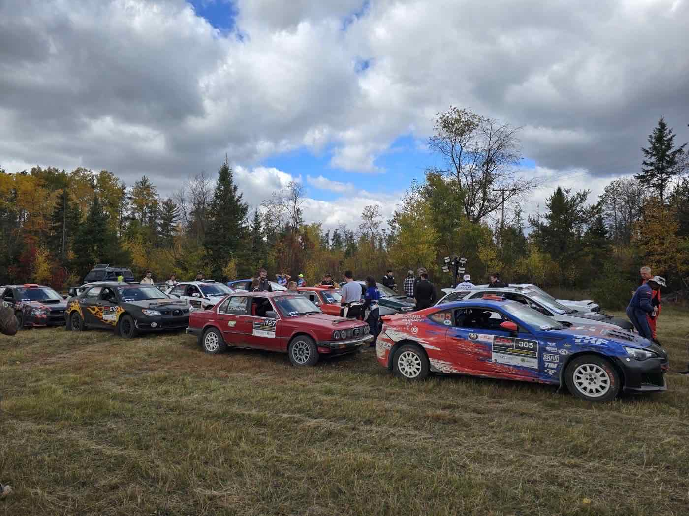

Spring, Summer & Fall Activities in Michigan's Western U.P.
When the snow melts, the Upper Peninsula comes alive with endless ways to explore. From hiking trails that wind through the Ottawa National Forest to fishing in sparkling streams and lakes, chasing waterfalls, hunting for rocks and minerals, or cheering at the Lake Superior Performance Rally, there's something here for every kind of adventurer.
Fishing
The Ottawa National Forest offers 953,000 acres with more than 500 lakes and 2,000 miles of streams to fish in! In the Upper Peninsula, the Michigan trout season runs from the last Saturday in April to September 30, with later seasons for bass, walleye, northern pike, and muskellunge. See the MDNR Fishing Guide for exact dates. Spring (May–June) is generally best for lake fishing on the Ottawa; summer (July–August) is somewhat slower, with fall (September–October) in between. Stream fishing for lake-run salmon and steelhead usually picks up around April 1, and the best fishing on these streams starts around mid-September and lasts until the snow flies.
Hunting
Hunting is a major recreational activity in the Ottawa National Forest — deer, black bear, and grouse hunting is excellent, along with other small game, waterfowl, and furbearers. All hunters are required to hold a valid State of Michigan hunting license and obey all fish and game regulations.
Hiking
More than 196 miles of hiking and backpacking trails in the Ottawa National Forest vary widely in character, from short easy walks to points of interest like waterfalls and historic sites, to challenging cross-country travel. The North Country Trail crosses the U.P. from east to west. If you need help with food pickup, package pickup, or a ride while you're out here, please don't hesitate to contact us.
Lake Superior Performance Rally
Every October, the area hosts the Lake Superior Performance Rally. There is nothing like seeing cars traveling at high speeds on back country forestry roads.

For the Rock Hound in Your Group
This area, and much of the U.P., is well known for copper, silver, iron, and semi-precious stones and minerals. Check out local streams, rivers, rocky beaches, and quarries and you just might find Lake Superior agates, fossils, amethyst, and fluorescent sodalite. Please respect private property and Michigan's rock collecting laws.
The Adventure Mine
Experience rappelling down a mine shaft, underground drilling and blasting workshops, or an easy guided walking tour.
The Caledonia Mine
Enjoy the finest copper and mineral collecting in the world — spend the day digging through your own private ore pile and, with the help of experienced staff, take home whatever treasures you find.
Copper Peak
Experience the world's largest ski jump and one of the most unique adventure spots in the U.P. Take the chairlift ride up, then an elevator, and finally climb to the top platform for breathtaking views over endless forests and Lake Superior. In fall, Copper Peak offers some of the best color viewing in the Midwest, and renovations are underway to bring it back as an active ski flying hill — the only one of its kind in the Western Hemisphere.
Mt. Arvon — Michigan's Roof
Venture off the beaten path and discover Mt. Arvon, the highest natural point in Michigan at 1,979 ft, nestled in the rugged Huron Mountains of Baraga County. In spring, snowmelt swells creeks and reveals hidden waterfalls along the trail. By summer and fall, the forested hike—marked by blue-diamond blazes—feels like a secret rite. From the upper parking lot, it's a short walk to the summit, where you'll find a USGS marker, a mailbox with a logbook, and a bench overlooking the Huron ranges.
Keep in mind the drive in is part of the adventure—logging roads, rugged terrain, and seasonal mud can make it challenging for standard vehicles. If you're up for a little more adventure, see if you can locate “The Rock Cut” or the “Million Dollar Railroad” nearby, a well hidden gem full of local history — read more on our Strange & Unknown Things page.
Other Points of Interest
The Upper Peninsula is full of hidden gems beyond waterfalls — from historic mines and scenic overlooks to lighthouses and quirky roadside finds. Take a drive, follow the map, and discover what makes the U.P. so unforgettable.
Ready to Explore the Western U.P.?
Whether you're planning a weekend adventure or enjoying a weeklong excursion, we've got cozy lodging and are centrally located in the Ottawa National Forest for tons of U.P. fun.